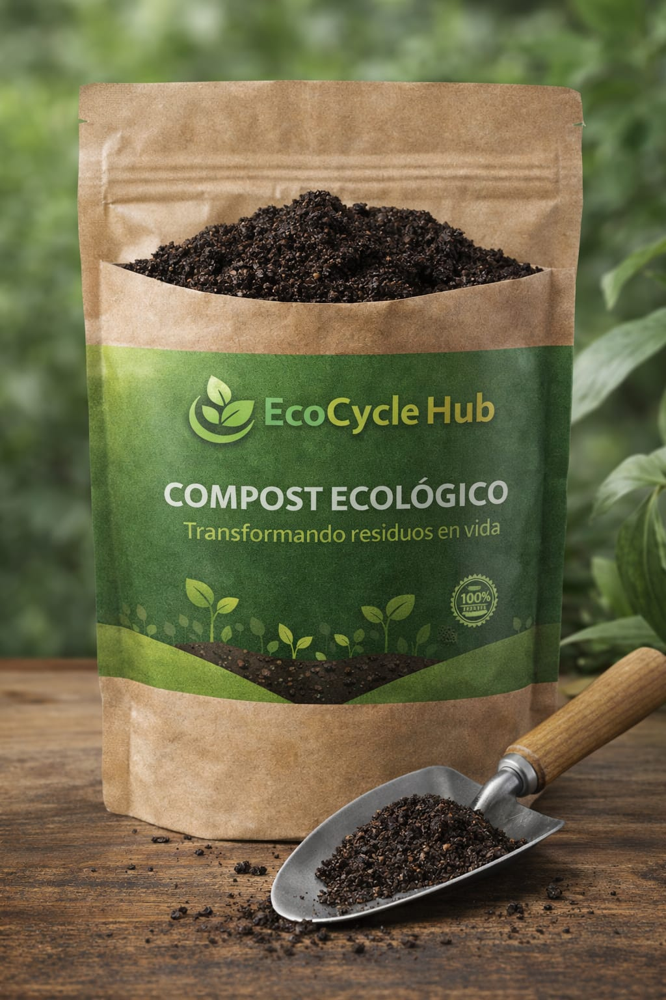

Contaminación de residuos
El 60 % de los residuos sólidos son orgánicos y terminan en vertederos, generando lixiviados que contaminan suelo y agua.
~2.000 millones de toneladas de residuos sólidos anuales
Aprende compostaje, reciclaje y sostenibilidad mediante contenido práctico y experiencias reales.
Cada año millones de toneladas de residuos orgánicos contaminan nuestro planeta sin que exista suficiente educación para cambiarlo.
El 60 % de los residuos sólidos son orgánicos y terminan en vertederos, generando lixiviados que contaminan suelo y agua.
La descomposición de residuos orgánicos sin control libera metano, un gas 25 veces más dañino que el CO₂ para el clima.
Menos del 30 % de la población conoce técnicas básicas de compostaje o reciclaje, perpetuando el ciclo de contaminación.
Un ciclo completo que convierte residuos en aprendizaje y genera impacto real en la comunidad.
Recogemos residuos orgánicos de hogares, restaurantes y mercados locales con rutas optimizadas.
Aplicamos técnicas de compostaje aeróbico controlado para acelerar la descomposición de manera natural.
Los residuos se convierten en abono orgánico de alta calidad, listo para enriquecer suelos y jardines.
Documentamos cada etapa y creamos videos, guías y talleres accesibles para toda la comunidad.
Medimos y comunicamos el impacto: CO₂ evitado, residuos desviados de vertederos y comunidades formadas.

Cada kilogramo de compost y cada persona educada es una victoria para el planeta.
Desviamos toneladas de residuos orgánicos de los vertederos, extendiendo su vida útil y reduciendo el colapso del sistema de gestión de basura.
Al compostar correctamente evitamos la liberación de metano y otros gases de efecto invernadero que aceleran el cambio climático.
Formamos ciudadanos con conciencia ecológica real, capaces de replicar prácticas sostenibles en sus hogares y comunidades.
Cerramos el ciclo de los materiales: lo que antes era "basura" se convierte en insumo valioso para agricultores y jardines urbanos.
EcoCycle Hub contribuye directamente a 6 de los 17 Objetivos de Desarrollo Sostenible de la ONU.
Promovemos el aprendizaje sobre sostenibilidad mediante contenido accesible para todas las edades.
Generamos empleos verdes inclusivos y fomentamos el emprendimiento sostenible en la economía circular.
Contribuimos a gestionar residuos urbanos de forma sostenible, mejorando la calidad de vida en las ciudades.
Educamos sobre producción y consumo responsable, reduciendo el desperdicio desde la fuente.
Reducimos emisiones de GEI mediante compostaje y sensibilizamos sobre la urgencia climática.
Construimos redes de colaboración entre comunidades, empresas e instituciones para escalar el impacto.
Conectamos a personas comprometidas con el planeta a través de contenido, experiencias y conversaciones que generan cambio real.
Tutoriales paso a paso sobre compostaje, lombricompost y agricultura urbana.
Consejos rápidos y prácticos que puedes aplicar desde hoy en tu hogar.
Experiencias prácticas donde aprendes haciendo, junto a expertos y vecinos.
Grupo activo de personas que comparten logros, dudas y proyectos sostenibles.
El planeta no puede esperar. Sé parte de la solución hoy mismo y transforma tu manera de relacionarte con los residuos.
Comenzar ahora